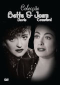

|

"Bette and Joan Collection"
(1942-47 - 495m)
SINOPSE
FASCINAÇÃO
("Humoresque") 1946
Helen Wright (Joan Crawford) é uma mulher da alta sociedade habituada a usar e deitar fora tudo o que lhe apetece - roupas, bebidas, homens. Mas quando ela conhece o talentoso violinista Paul Boray (John Garfield), é ela que corre o risco de ser usada e posta de parte. Crawford interpreta uma personagem complexa e profunda, dividida entre o amor incondicional e os impulsos mais egoístas neste penetrante e corajoso ensaio sobre o desejo e o amor. O talento de John Garfield brilha no seu retrato de um homem genial e ambicioso. O filme inclui interlúdios musicais de excepção, nos quais Garfield demonstra uma extraordinária técnica instrumental que na realidade deve-se a dois violinistas: o lendário Isaac Stern que interpretou os temas, e outro instrumentista que emprestou as mãos à filmagem. Bravo!
A VAIDOSA
("Mr. Skeffington") 1944
A quem pertence a cara horrível e desfigurada no espelho? Não será concerteza a de Fanny Skeffington, a mulher mais bela de Nova Iorque. Para Fanny, a beleza sempre foi um instrumento de manipulação e ascensão social. Mesmo depois do casamento, ela nunca desencorajou algum pretendente. Mas agora, a difteria roubou-lhe a sua única qualidade. E sem a sua aparência, ela está perdida. Pela interpretação desta mulher, Bette Davis mereceu a sua oitava nomeação* a um Óscar®. E com o apoio de Claude Rains, no papel do
seu dedicado marido, de um elegante guarda-roupa e da sumptuosa banda sonora da autoria de Franz Waxman, Davis conseguiu transformar um "filme para mulheres" numa verdadeira obra de arte. Vejam o seu rosto devastado iluminar-se duma luz interior quando ela
encontra a esperança nas palavras, "Uma mulher só é bela quando alguém a ama. Só então." Pura magia.
LOUCURA DE AMOR
("Possessed") 1947
Ela ama-o quando ele desaparece meses a fio. Ela continua a ama-lo quando ele se recusa a casar com ela. Mas quando o insensível David Sutton se decide casar com outra mulher, o amor que Louise Howell sente por ele, transforma-se de maneira inesperada e violenta: se ela conseguir lançar a mão a uma pistola, vai amá-lo... até à morte. Joan Crawford junta-se com o produtor Jerry Wald, responsável por Alma em Suplício, para o filme que mereceu um Óscar® à actriz*, e ganhou mais uma nomeação a Melhor Actriz de 1947 para o seu retrato de Louise, uma mulher instável e irada. «'Amo-te' é uma expressão tão pobre para te dizer que te amo» diz Louise «Nem chega para descrever quanto o amor às vezes dói.» Com Joan Crawford no seu melhor, até a dor sabe bem.
*1942: Melhor Actriz Secundária.
**1942: Melhor Banda Sonora para Filme Dramático ou Cómico.
A ESTRANHA PASSAGEIRA
("Now, Voyager") 1942
Uma delicada história de amor, um apaixonante drama psicológico, a história inspiradora duma transformação física e espiritual. A estranha passageira é tudo isso, e também um marco na carreira de Bette Davis, o filme que lhe valeu a sua sexta nomeação ao
Óscar® de Melhor Actriz. Ela interpreta Charlotte Vale, uma mulher solteira que desafia uma mãe dominadora (Gladys Cooper, também nomeada* ao Óscar®) para conhecer o amor, o sofrimento e a felicidade passageira. À magia do talento de Davis juntam-se os
outros intérpretes, que compõem um elenco de primeira, a premiada** banda sonora de Max Steiner e um momento improvisado por Paul Henreid que se tornou num verdadeiro clássico: ele acende dois cigarros ao mesmo tempo e oferece um deles a Bette Davis. Se quiser o mais romântico melodrama de todos os tempos, convide esta Estranha Passageira para o acompanhar na viagem.
"Óscar da Academia®" e "Óscar®" são marcas registadas da Academy of Motion Picture Arts and Sciences.
REALIZADORES
Jean Negulesco, Vincent Sherman, Curtis Bernhardt, Irving Rapper.
INTÉRPRETES
Joan Crawford, Bette Davis, ...
|
VIDEO
Standard 1.33:1 [4:3]
Preto e branco
AUDIO
Inglês Mono
LEGENDAS
Português
OPÇÕES ESPECIAIS
Menus Interactivos
Selecção de Capítulos
DISCOS/LADOS
4 discos de 1 lado
ESTÚDIO(S)
Warner Bros. Pictures
DISTRIBUIÇÃO
Warner Home Video Portugal
|